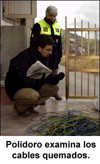
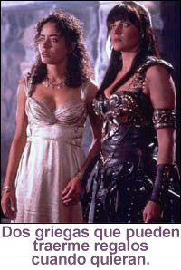

Nuestro contacto en Italia
La semana pasada, la agencia de noticias Reuters informó sobre una historia muy difundida y popular acerca de una serie de incendios espontáneos que, según se dice, comenzaron a mediados de enero en alrededor de veinte casas en el pueblo de Canneto di Caronia —al norte de Sicilia—. Los incendios siguieron ocurriendo casi diariamente aun cuando se había cortado el suministro eléctrico del pueblo. La previsible multitud de científicos, ingenieros, periodistas, equipos de televisión, fotógrafos, policías y hasta algunos “cazafantasmas” corrió al pueblo en busca de pistas para resolver el misterio de la “combustión espontánea de todas las cosas, desde cajas de fusibles a hornos de microondas y hasta un auto”. Se informó sobre un acondicionador de aire que estalló en llamas y quedó reducido a cenizas en treinta segundos, ciertamente un evento notable. Oficiales de la policía declararon haber visto cables aéreos estallando en llamas. Lámparas desenchufadas y hasta un departamento completo fueron consumidos por el fuego. Cuando Enel, el proveedor de electricidad de Italia, cortó el suministro externo del pueblo y conectó un generador, ¡también éste se incendió! También los teléfonos celulares y los coches dieron problemas, cuando los sistemas de cerraduras y de alarmas, según se cuenta, comenzaron a accionarse sin razón aparente. Los televisores y ventiladores se encendían y apagaban espontáneamente. ¡Ooooh!
Las hipótesis científicas iban desde una acumulación de energía eléctrica causada por los cables del ferrocarril eléctrico, hasta un raro “fenómeno natural” por el cual surgían oleadas de electricidad del núcleo de la Tierra. En respuesta a tales posibilidades, se instaló un conjunto de instrumentos para monitorear los índices geomagnéticos, meteorológicos, electromagnéticos y electrostáticos, en el acostumbrado enfoque supertecnológico que se aplica para resolver misterios similares. El alcalde del pueblo estaba desconcertado. Dijo: “Cada vez que llega un nuevo científico, piensa que todo el asunto fue inventado o que va a resolver el misterio en dos minutos. Todos se equivocan”. La actividad alcanzó tales proporciones que el pueblo fue evacuado luego de que el gobierno regional declarara el estado de emergencia.
El exorcista local de la Iglesia Católica llegó y —para sorpresa de nadie— anunció de inmediato que era obra de Satanás. “Ya he visto cosas así. Los demonios ocupan una casa y se manifiestan en los electrodomésticos”, dijo, y urgió al sacerdote de la parroquia a entrar en acción. Pero el cura local, quien en mi opinión es más inteligente que el exorcista, decidió dar a los científicos una oportunidad para resolver el acertijo.

Nuestro buen amigo Massimo Polidoro, jefe del Comité Italiano para el Control de las Afirmaciones Paranormales (CICAP) llegó para observar, y pronto descartó los demonios y poltergeists. Massimo dijo: “El hecho de que los fenómenos sólo ocurren cuando hay personas presentes hace difícil creer que es una situación natural o incluso sobrenatural”. Este vigoroso investigador de cosas que surgen en la noche comparte con nosotros sus hallazgos en un exclusivo resumen para los lectores de la JREF. Escribe:
Hace poco tuve la oportunidad de visitar Caronia gracias al editor de “Focus”, una popular revista científica italiana, quien me pidió que investigara el caso. Mientras estuve presente no ocurrió nada excepcional en el pueblo. En realidad ni siquiera es un pueblo, son sólo 6 ó 7 casas y los 37 habitantes son todos familiares.
Se han ofrecido varias hipótesis “naturalistas” para explicar los fenómenos: campos electromagnéticos, rayos en bola, reacciones geotérmicas… Algunos incluso sugirieron las viejas explicaciones de “poltergeists” o “posesiones demoníacas”, pero nadie les hizo caso. Careto di Caronia fue rápidamente evacuado por las autoridades civiles, y desde entonces nada ha ocurrido. Sólo cuando había gente las cosas comenzaban a quemarse, lo cual ciertamente parece extraño si éste es un fenómeno natural. Además, hemos hablado con un técnico de Telecom que fue llamado inmediatamente después de que ocurrió el primer daño. Su opinión fue que las quemaduras de los cables se generaron en una fuente externa, tal vez un pequeño encendedor de cigarrillos. Incluso nos dio muestras de los cables que encontró allí, que ahora están siendo evaluados por expertos. El caso sigue abierto.
Es interesante que, pocas semanas después de los incendios de Caronia, haya tenido lugar en Roma un fenómeno extraño que recibió gran atención de los medios, y fue rápidamente atribuido a los mismos sucesos. Una mujer estaba cortando un trozo de queso con un cuchillo nuevo, ¡y el cuchillo de pronto explotó! Como explicación alternativa, se ha pensado que podría ser otro ataque de un terrorista tipo “Unabomber” [1] (se ha informado sobre otros en Italia en los últimos años), pero esto fue pronto descartado. Puesto que no era un cuchillo eléctrico, sino uno común y corriente, tenía que ser o bien alguna fuerza misteriosa como en Caronia, o bien —de nuevo— un fenómeno poltergeist.
Sin embargo, un par de días después la policía local descubrió que la mujer había cortado el queso mientras éste estaba apoyado sobre un cable. De este modo, lo que ocurrió fue que la mujer cortó el queso y el cable al mismo tiempo, y recibió una descarga eléctrica. Caso cerrado.
La foto que muestra a Polidoro en Caronia con uno de los expertos de defensa civil fue tomada por Roberto Spampinato. La amplia variedad de eventos extraños que se informaron eran obviamente casos que habrían pasado por simples anomalías si el pueblo no estuviese “en sintonía” con demonios u otras causas místicas. Si hay novedades sobre este “misterio”, les informaremos. La historia completa de Polidoro aparecerá con muchos más detalles en el próximo número de The Skeptical Inquirer, Mayo/Junio 2004, páginas 26/27. ¿Están suscritos?
¿Funciona alguna vez? Segunda parte
Continuamos con la segunda parte de “¿Funciona alguna vez?” de la semana pasada. Recordarán que nuestro aventurero se había involucrado con unos sujetos que intentaban convencerlo de la eficacia de su “invento”, un dispositivo que esenciamente no era más que una vara de zahorí. Le decían que en el pasado lo habían usado para encontrar grandes cantidades de oro fundido, pero por distintas razones no habían podido tomar posesión de él. Aunque intentó diligentemente hacerlo funcionar, no lo logró ni una sola vez. Sus compañeros recurrieron a contarle sus pasados éxitos:
Me mostraron un álbum de recortes de sus actividades. No había una sola foto de lingotes o monedas de oro. Tenían varias imágenes de artefactos que decían haber encontrado. A mí me parecían fotos de fotos. Una cosa es clara: realmente estuvieron excavando en los sitios que mencionan. Tienen muchas imágenes con los indígenas locales, imágenes de Darryl en una zanja con un martillo neumático, imágenes de Pete operando una retroexcavadora. No vi absolutamente ninguna evidencia fotográfica de que hayan encontrado oro. Lo cierto es que está claro que han gastado mucho dinero: estos viajes no les han resultado baratos. Alquilar equipo pesado es muy costoso. Aparentemente tienen respaldo financiero, y todos aseguran haber invertido hasta el último centavo que tenían.
Debo mencionar que también tienen un conjunto de fotos “especiales”. Éstas se parecen notablemente a cualquier imagen infrarroja que yo haya visto. En estas fotos hay áreas brillantes —las llaman “destellos”— que supuestamente representan enormes reservas de oro. Presumiblemente fueron tomadas desde el aire usando la habilidad especial de Pete y una película y preparado químico supersecretos. Le dije que parecían infrarrojas. Él lo negó enfáticamente y aseguró que usaba una porción del espectro electromagnético que solamente él podía capturar en película. No es necesario decir que nunca vi la cámara, ni la película, ni los químicos. Pete tiene una de esas fotos en el dorso de su tarjeta de presentación.
Claro que tienen muchas excusas convenientes para sus fracasos:
Climáticas: Hace mucho frío o hay demasiado viento para que el Localizador funcione adecuadamente.
Energéticas: Toda la “energía” es incorrecta, sea la “energía” del individuo de opera el dispositivo o las malas vibraciones emitidas por la presencia de los guardianes. Incluso el mal karma emitido por uno solo de los miembros del equipo es suficiente para hacer daño.
Operativas: El transmisor aún no es suficientemente potente (“estamos trabajando en esa deficiencia”). O hace falta mucha “práctica” para operar con éxito el Localizador. O el EMIA no es suficientemente fuerte (necesita estar más cerca / debe ser una reserva grande).
Situacionales: Los mormones, los federales, los aborígenes y/o los “guardianes” no nos dejan llevarnos su oro. Pete y sus anteriores equipos han localizado y desenterrado toneladas de oro. El problema es que cada vez los mormones, los federales, las tribus o los miembros de sus antiguos equipos lo golpeaban o le disparaban y le robaban todo.
Según mi conocimiento, no existe el Aura de Intensidad Electromagnética (EMIA). Es claro que surgen ondas electromagnéticas de ciertas reacciones químicas o nucleares. Y sí existe la intensidad electromagnética, pero es un concepto muy general. Por ejemplo, quienes toman baños de sol están expuestos a un campo moderado de radiación ultravioleta de intensidad electromagnética, generalmente llamado “Sol”. De hecho, el Localizador emite un campo muy débil en la porción de 5 kilohertz del espectro electromagnético. El EMIA es un invento acientiífico del pensamiento deseoso.
Un transmisor de señales de radio de baja potencia en una frecuencia de 5 khz no tiene ningún significado físico especial. ¿El oro fundido tiene una oscilación inherente de precisamente 5 khz? En realidad, no lo sé. Pero apostaría todo mi dinero a que si así fuera, científicos mucho más inteligentes que Pete y compañía lo habrían descubierto hace años y habrían encontrado todo el oro procesado que se pudiera localizar. Suponiendo que este transmisor tuviera la potencia y la frecuencia correctas para el oro, ¿cómo se supone que este dispositivo funcionará si no hay mecanismo receptor? El diagrama que vi sólo incluía un transmisor. La punta de oro del brazo del Localizador no estaba conectada a los componentes electrónicos de la caja de control.
Todos ellos tenían otras creencias paranormales y hacían afirmaciones fantásticas. Contrataron un psíquico de Filadelfia para que los ayudara en su sitio de Nuevo México. Fue de gran ayuda para percibir la reserva de oro. Adicionalmente, Darryl recibió una sesión personal relacionada con su padre, quien falleció hace años. El psíquico confirmó que el padre de Darryl estuvo, de hecho, implicado en el Experimento Filadelfia, y aparentemente estuvo en peligro gran parte de su vida adulta y fue amenazado muchas veces por agentes del gobierno federal. Todos insisten que estas reservas de oro son vigiladas por los guardianes, quienes pueden ser buenos o malos según la energía global emitida por el grupo. Pete asegura que pueden invocar una maldición sobre una persona, similar a las maldiciones o maleficios descritos en el vudú, la brujería o los buenos cuentos de momias. Y con respecto a los OVNIs, Pete cree firmemente que todos los petroglifos y demás inscripciones antiguas, o bien fueron producidos por los extraterrestres mismos, o bien son representaciones de los extraterrestres creadas por humanos en la antigüedad. Darryl está convencido de que un día desenterrarán intacta la nave madre extraterrestre.
Darryl se refirió numerosas veces a sus lazos con la mafia en Filadelfia. Mencionó varias cuentas pendientes con personas con las que él y Pete habían tenido problemas durante las excavaciones, asegura que ya se ha “cargado” a varios y que ciertamente matará a esos supuestos forajidos. Además, asegura que el hampa le ha prestado una gran cantidad de dinero para financiar estas operaciones de búsqueda de oro. Usa su historia de torturas por el Viet Cong (sea verdadera o no) para explicar sus numerosos padecimientos: una renquera, un brazo roto en varios puntos, diabetes, úlceras sangrantes, etc. También asegura haber sido un mercenario en Haití, donde estuvo en el equipo de seguridad personal de “Baby Doc” Duvalier en los ochenta.
No puedo asegurar que estos sujetos estén perpetrando algún fraude. El hecho es que me pagaron completos los USD 1.500 por el trabajo que hice para ellos, y ni una sola vez me pidieron dinero para financiar sus operaciones. Mi opinión es que están completamente engañados y creen firmemente en lo que hacen. Los he visto reaccionar violentamente ante cualquier evidencia que contradijera su sistema de creencias. ¡Su negación es tan profunda que enorgullecería a O.J.! Pete ha adoptado la pose del líder de una secta. Sus seguidores son extremadamente leales. Darryl asegura haber invertido alrededor de USD 100.000, aunque la cifra cambió mucho en el tiempo que estuve con él, variando entre USD 50.000 y USD 100.000. Su conducta indica que puede haber algo de verdad en esta contribución. Su casa está en venta, y se mudó hace seis meses. Sigue teniendo problemas de presión sanguínea. No acepto los montos de la historia del préstamo del hampa, pero sí creo que Darryl ha hecho una inversión significativa en esta empresa y tiene problemas financieros. También Pete está cosechando lo que sembró. Vuelve a tener problemas con una úlcera sangrante.
Por cierto que es una historia interesante y entretenida. Sin embargo, sostengo que estos sujetos son peligrosos, no sólo por su sistema de creencias, sino porque están cada vez más desesperados. Como ya mencioné, Pete quiso contratarme de nuevo luego de que me pagaron por mi intervención. Quería que preparara un análisis exhaustivo de la física subyacente del Localizador, qué es el EMIA, y cómo el dispositivo lo detecta. Para mí, eso fue el acabóse. Supuestamente Pete había “inventado” el Localizador. ¿Cómo puede inventarse un dispositivo como éste sin entender sus principios de operación? Así que preparé un detallado presupuesto en el cual requería una suma escandalosa para realizar ese análisis. Fue la última vez que supe de Pete.
Darryl sigue merodeando el vecindario. De hecho, lo vi hace unos días. Pasó a saludar mientras iba de paso. Pete y él han estado viendo casas de varios millones de dólares, y Darryl considera comprar un campo de golf. ¡Esperan encontrar la veta madre el mes próximo! ¡No puedo esperar para ver esos lingotes y monedas!
Agradezco a nuestro lector anónimo por esta contribución. Por razones de seguridad, todos los nombres y lugares de este artículo en dos partes fueron cambiados. Si alguien aún duda que los zahoríes sean absolutamente insumergibles, vayan a http://members.aol.com/tbskep/Moore_chall_result.html y vean los resultados de un test realizado aquí, en Florida, por Tampa Bay Skeptics. Luego de leer la primera parte, hagan click en “Retest of Moore” al final. Es muy revelador, en perfecta sintonía con todas las pruebas que he hecho yo de esta clase de afirmaciones.
Sin embargo, debo señalar dos cosas. Primero: en todas mis pruebas, tengo un período “abierto” o “base” en el cual el postulante sabe cuál contenedor es cuál, y debe demostrar que puede establecer la identidad todas las veces usando sus técnicas de rabdomancia. Esto evita las quejas, hechas siempre después del fracaso, de que las condiciones no eran las adecuadas, puesto que vemos que no hubo ninguna falla mientras el zahorí conocía las identidades, sino sólo durante la parte “ciega” del proceso. Segundo: aquí no veo ninguna estipulación para hacer verdaderas pruebas a doble ciego, las cuales requerirían que nadie que hubiera colocado los objetivos estuviera presente durante los intentos de identificarlos. Eso se hace para evitar que alguien suministre inadvertidamente alguna respuesta.
El poder de la adrenalina
El lector Leslee Green escribe:
Quisiera decirle al sujeto que descubrió un dispositivo que le permite hablar con los muertos, que está perdiendo su tiempo. No se necesita ningún dispositivo; todo lo que hay que hacer es hablar con los muertos en voz alta. Lo difícil es lograr que respondan.
Me recuerda el cuento del sepulturero que perdió la noción del tiempo y descubrió al final del día que había hecho la fosa demasiado profunda y no podía salir. Sus compañeros ya se habían ido, así que se acomodó en un rincón y se durmió. Un hombre que todas las noches cortaba camino por el cementerio al volver de su trabajo cayó en la nueva fosa. Trató desesperadamente de salir varias veces, hasta que oyó la voz del sepulturero que despertaba en un rincón: “No se puede salir de aquí”. ¡Bien, él sí salió!
Demostrando la credulidad

Me enviaron este ejemplo de una deliciosa broma que el famoso astrónomo británico Patrick Moore le hizo en 1976 a su vasta audiencia radial. Anunció en BBC Radio 2 que a las 9:47 AM tendría lugar un evento astronómico único que los oyentes podrían experimentar en sus propios hogares. Dijo que el planeta Plutón pasaría por detrás de Júpiter, causando un alineamiento gravitacional transitorio que contrarrestaría y disminuiría la gravedad de la Tierra. Moore dijo a sus oyentes que si saltaban en el momento exacto en que este alineamiento ocurriera, experimentaría una extraña sensación de estar flotando. A las 9:47 AM, BBC comenzó a recibir centenares de llamadas telefónicas de oyentes que aseguraban haber tenido esa sensación. Una mujer incluso informó que ella y once amigos se habían elevado de sus sillas y habían flotado por la habitación. Tal vez exageró levemente…
Piensen por un instante: éste es otro pequeño ejemplo de la facilidad con que la gente le “sigue la corriente” a cualquier cosa que presenten los medios, que les dé la oportunidad de “participar” en algo popular mientras ocurre. Observen el número de personas que llamaban cada vez que Uri Geller aparecía en radio o televisión y les sugería que sucederían cosas misteriosas en sus casas mientras él “influía” en ellas, ¡incluso cuando se emitía un programa grabado! En junio de 1989, mientras preparábamos el programa por el “Desafío Psíquico por USD 100.000” en Los Angeles, necesitamos demostrar este “seguir la corriente”, de modo que llevamos a Massimo Polidoro —la respuesta italiana al sinsentido psíquico, mencionado en el primer artículo de esta semana— a una estación de radio de San Diego. Massimo se hizo pasar por psíquico y dijo a los oyentes que llamaran a la estación cuando comenzaran a ocurrir cosas extrañas en sus hogares. Fuimos inundados con respuestas: una mujer informó de la caída de una araña de luces; otros dijeron que sus mascotas estaban inquietas, y hubo varios informes de cucharas dobladas y platos rotos. Habíamos demostrado lo que decíamos.
Fuerzas imaginarias en acción
Un lector anónimo nos envía:
Reconozco que no soy tan versado en ciencia como debería, pero sé cuándo empezar a cuestionar lo que la gente me dice. Acabo de salir de una reunión de marketing en la que tuve dos sorpresas. Trabajo con dos clientes —personas normalmente inteligentes— que son marido y mujer, y durante mi última reunión con ellos surgió una conversación sobre temas disparatados, algo que nunca me había ocurrido en una reunión de negocios. Los clientes hablaban de computadoras. Pronto viajarían por el extranjero, de modo que llevarían sus portátiles. Todo normal.
Entonces la mujer, tan casualmente como fuera posible, dijo la frase que me dejó bloqueado:
—Pero claro, con el problema de magnetismo de mi marido, nunca se sabe si la computadora no se arruinará.
—¿Perdón? —dije yo.
—Problema de magnetismo —repitió, moviendo la mano—. Desmagnetiza computadoras. Sucede todo el tiempo. No funcionan cuando él anda cerca. Arruina las placas.
—Oh… En serio…
—Sí, ¿sabes que todos generamos fuerzas magnéticas? Las suyas arruinan las computadoras. Solamente computadoras, por algún motivo. Todo lo demás funciona bien.
Naturalmente, prontro investigaré un poco el tema, y cuán difundida está esta teoría. Sin embargo, encuentro interesante que este caballero que supuestamente borra toda la información de las computadoras, casualmente no es una persona muy diestra técnicamente, algo que yo ya sabía muy bien. Avanzando en la conversación, esta misma clienta comenzó a hablar de que ella y su esposo estaban terriblemente preocupados de que fueran a quedar implicados por accidente en alguna actividad terrorista mientras estaban de viaje. Pero la mujer indicó que años atrás había ido a ver a un psíquico que le había dado un cristal, de modo que lo llevaría con ella y eso sería útil.
Un cristal. Las cosas iban a ir bien porque alguien que dice tener poderes psíquicos le dio un pedazo de cuarzo. Cielos, si es así, deberíamos hacer que Sylvia energice unos cuantos y distribuirlos entre quienes tratan de reconstruir Irak. No sabía que la solución al terrorismo fuera tan fácil.
Admito que en aquel encuentro no hice mucho por la causa de la razón. Estaba totalmente atónito. Y honestamente, no tengo idea de cuál es el protocolo más cortés y adecuado cuando es mi propio cliente quien tiene ideas extrañas.
Gracias por escuchar, y siga adelante. Esta conducta está tan extendida que me sorprende que no esté usted completamente exhausto.

¿Quién dice que no…?
Otra prueba religiosa
Con frecuencia me preguntan: “Si alguien no le teme al Infierno, ¿por qué habría de llevar una vida moral?”. Ésta es casi la pregunta más insultante, condescendiente y humillante que se puede formular. Da a entender que sin temor a un castigo atroz, cualquiera robaría, asesinaría, mentiría o haría cualquier cosa en su propio provecho. Esta presunción se refleja en una nota que me envió un lector, en la que cita la Constitución del Estado de Tennessee:
Artículo 1, Sección 4: No se requerirá ninguna prueba política o religiosa como calificación para ocupar ningún cargo o puesto público en este estado, más que el juramento de respaldar la Constitución de los Estados Unidos y de este estado.
Pero luego, en el artículo 9, sección 2:
Ninguna persona que niegue la existencia de Dios, o un estado futuro de castigos y recompensas, ocupará ningún puesto en el departamento civil de este estado.
El énfasis es mío. Da miedo. Da mucho miedo.
El programa menos embrujado
El lector Jez Wood, del Reino Unido, escribe:
Le escribo sobre un programa que se ve aquí llamado “Most Haunted” (“Los más embrujados”). Es presentado por dama llamada Yvette Fielding. La productora ejecutiva tiene el mismo nombre, y hay también un asistente de cámara llamado Rick Fielding. Estoy seguro de que todo es una coincidencia, pero de todos modos es interesante.
Ahora bien, el “medium espiritista residente” es un tal Sr. Derek Acorah, quien, estoy seguro, usted no necesita que le presente. Es un hombre extravagante y amigo de la cámara, y, hay que decirlo, uno siente que si quisiera ser actor, le iría muy bien. Es sólo una observación personal, usted entiende. Ha sido poseído por espíritus de muertos en numerosas ocasiones. Durante una de estas posesiones, un miembro del personal le preguntó al intruso: “¿Quién está en el trono en este momento?”. Se refería a la supuesta fecha de la existencia terrenal del espíritu ofensivo. La dudosa respuesta del espíritu / el señor Acorah fue muy agresiva y brusca: “¡Averígualo tú mismo!”. Humm, ésta es otra visión personal, pero ¿tal vez alguien no hizo su tarea?
Resumiendo, el equipo del programa viaja a varios sitios de nuestro país e intenta comunicarse con los espíritus por medio del señor Acorah, quien es aptamente asistido por su guía espiritual “Sam”. Supongo que Sam es un indio piel roja, aunque, que yo sepa, esto nunca fue confirmado. Como sea, el señor Acorah identifica y se comunica con estos espiri… zzzzzzzz… ¡oh!, por favor discúlpeme, me quedé dormido por un momento. Creo que no hace falta seguir explicando los procedimientos, puesto que todos los conocemos demasiado bien.
Ahora, a lo que iba: “Most Haunted” emite varios programas en vivo a lo largo del año, generalmente en Halloween, Año Nuevo (no estoy seguro del significado de esa fecha), Pascua (ídem), etc. etc. Durante los últimos seis programas en vivo, contacté al equipo y lancé mi propio “minidesafío”, a saber, que pasaré una noche, solo, en un sitio de su elección con todo el equipamiento de video y sonido, pentáculos, velas negras, patas de conejo o cualquier otra cosa que ellos consideren necesaria para el éxito del cazafantasmas promedio. Bien, me resulta molesto decirlo, pero la semana pasada ocurrió algo totalmente inexplicable, muy extraño y en extremo perturbador: ¡me respondieron!
Me dijeron que no era posible que un miembro del público hiciera algo así, puesto que contravenía las regulaciones de Sanidad y Seguridad. De acuerdo, no soy un experto en esto, así que debo aceptar su palabra. Sin embargo, sé de buena fuente que puedo comprar boletos para su próxima extravagancia en vivo y ser un miembro del público, que por lo general consiste en damas con largo cabello negro, adornadas con chales y pendientes de argolla. Para que conste, he visto casi todos los programas, en vivo o no, y puedo ofrecer el siguiente resumen:
Cantidad de fantasmas registrados en película: cero.
Cantidad de ruidos extraños que no podían ser explicados luego de oír la grabación: cero.
Cantidad de orbes (¡sí, orbes! la tristemente célebre etapa inicial de la manifestación espiritual): incontables.
Lo más cerca de estuvimos de un “fantasma” fue cuando una cuchara voló sobre los hombros de Acorah y Fielding, en un cuarto de una “posada embrujada”. Una anciana que trabajaba allí explicó que estas cucharas estaban atadas (?) en el cuarto contiguo, y “no era posible que fueran removidas”. Punto.
Es obvio que no estaban atadas. Y hablando de eso, ¿por qué alguien querría atar una cuchara? Que la pongan en un cajón, con llave si quieren. ¿O eso es demasiado simple?
Las acusaciones de que alguien del personal la había lanzado, hechas por alguien que osó ser un poco escéptico, fueron velozmente eliminadas por los presentes y los creyentes por ser totalmente ridículas, con comentarios tales como “¿por qué alguien haría eso?” y “¡oh, vamos, no seas estúpido!”. Encantador, ¿eh?
Permítame señalar que, aunque la habitación estaba completamente a oscuras, se vio un destello cuando la cuchara cruzó por donde estaba el equipo, reflejando la poca luz del equipo de visión nocturna que iluminaba parcialmente a Acorah y Fielding. No se vio de dónde venía. Sin embargo, cuando golpeó la pared a unos tres metros de distancia, Acorah anunció: “Es una cuchara”. Considerando la falta de luz, supongo que Sam le susurró esta información.
A la fecha, “Most Haunted” no ha ofrecido ninguna evidencia creíble de la existencia de fantasmas, espíritus, el coco, la bruja mala del oeste, Freddie Kruger, trasgos, leprechauns, etc. etc. Son muy buenos, sin embargo, para atraer gente que desea creer en tales insensanteces, y su habilidad para aumentar las cifras de audiencia se confirma episodio tras episodio.

Parece que en un episodio, Yvette Fielding sintió un pellizco, y Derek Acorah lo atribuyó enseguida al espíritu de una niña llamada “Rosemary”. Ya ven, estos “sensitivos” pueden percibir tales asuntos mucho más rapidamente que los meros mortales. ¡Derek, eres un sinvergüenza!
Percibo anunciantes infelices que aporrean las puertas, y productores que se exprimen el cerebro tratando de averiguar que pasó con los habitantes de Nunca Jamás. Gracias, Jez. La próxima semana veremos una continuación del informe de Jez…
Imitando a la naturaleza
Hace un tiempo publicamos un artículo sobre cómo los elefantes usan frecuencias muy bajas (VLF, very-low- frequency) para comunicarse. Un lector nos envía a http://www.fas.org/nuke/guide/usa/c3i/vlf.htm donde se nos recuerda que los sistemas militares modernos —submarinos— usan señales de radio VLF dado que éstas recorren distancias muy largas. El problema ha sido duplicado. Primero, se necesita una antena enorme para que un sistema así sea eficiente, y la razón a la que pueden transmitirse los datos es muy pequeña. Aparentemente, los elefantes no manejan mensajes muy complicados…
Date por vencida, Sylvia
¡Noticias frescas de Sylvia Brown, profecías para el año 2004! Observen que cuarta ya ha mordido el polvo, y la segunda y la tercera están muy en el futuro.
El Papa Juan Pablo II no vivirá más allá de 2005.
En reemplazo de Juan Pablo II se elegirá un Papa negro en esta ocasión o la siguiente.
Luego de eso se elegirá un triunvirato de Papas, cada uno asignado a un área geográfica diferente.
En febrero de 2004 habrá en Seattle un terremoto 5,4 grados, pero no causará mucho daño.
En julio de 2004, el desempleo alcanzará un record histórico antes de descender por la llegada de una nueva tecnología de Texas y Nevada.
En julio/agosto de 2004, los empleados de dos grandes aerolíneas entrarán en huelga y los viajes en crucero alcanzarán un record histórico, pues la gente se sentirá más segura con esta forma de viajar.
Agosto/septiembre de 2004: México y los cayos de Florida serán arrasados por huracanes.
Noviembre de 2004, el presidente Bush no será reelecto.
En algún momento de 2004: terremotos de 6 grados en Alaska y Japón.
Diciembre de 2004: Saddam Hussein morirá.
Veamos qué tal se desempeña Sylvia en este negocio de las predicciones, en el que regularmente trastabilla pero nunca descubre cuán mala es. Las predicciones números 1, 7 y 9 muy probablemente se cumplirán, por supuesto. Recuerdo cuántas veces “videntes” como Jeanne Dixon predijeron la muerte de Rose Kennedy, y esa dama los frustró viviendo hasta los 105 años. La número 7 está justo en mitad de la temporada de huracanes en Florida, de modo que es bastante segura. Alaska es muy proclive a los terremotos, igual que Japón, y dado que todos los años hay alrededor de 1.300 terremotos de magnitud 6, la número nueve también es bastante segura.
Pero la 10 me tiene intrigado. Sylvia, tú habías dicho que Saddam moriría el año pasado, ¿verdad? ¿Está tomando el lugar de Rose Kennedy?
Supera a John y James
Siguiendo con el tema, el lector Andrew Feist señala:
No sé si conoce el sitio http://www.crank.net/ , pero es una especie de portal de todos los chiflados que habitan Internet; todos los sitios tienen su calificación, desde “fronterizo” hasta “poco lúcido”, además de algunos etiquetados como “parodia”.
Como sea, la última actualización fue el 6 de abril (¡al fin!), y tanto James Van Praagh como Crossing Over with John Edward fueron agregados a la lista en la categoría “vida después de la muerte”, ambos con la calificación “muy chiflado”. Aparentemente, Sylvia está allí desde agosto de 2000, calificada como “chiflada”.
Es un sitio interesante. Échenle un vistazo.
Ya sabemos por qué
Un lector llamado “Justin” me ha enviado esta versión renovada de una manera clásica de escapar a la realidad. ¡Hablando de condescendencia! Estas personas expresan sus pensamientos sublimes con toda confianza sentadas en posición de loto, y adoptan una sonrisa de despreocupación mientras me ponen en mi lugar:
Todas las personas y las cosas tienen su lugar y su propósito en este universo, y usted tiene el suyo. Sin embargo, me gustaría llamar su atención sobre este concepto. Las personas que tienen verdadero poder espiritual (o facultades “psíquicas”) NUNCA aceptarán su desafío. De hecho, cuanto más evoluciona espiritualmente una persona, y cuanto más poder la Divina Providencia le concede, tanto MENOS aparece en público. En otras palabras, quienes son verdaderamente espirituales y tienen auténticos poderes divinos se ríen de su desafío. No me malinterprete, no digo que lo que usted hace esté mal. ¡De hecho, usted es una bendición disfrazada! Cualquiera que intente aceptar el desafío ya se está exponiendo como un fraude y, en consecuencia, mostrando a los demás quién es verdadero y quién es falso. Así que gracias, James Randi.
Con razón los internos de los manicomios se ríen tanto. Por supuesto, estoy feliz de entretenerlos. Piensen por un momento cuán frustrado y desesperado debe estar un individuo para recurrir a esta clase de racionalización. Eh, ¿qué más tiene? Conviden el loto…
P&T sobre Geller

De un artículo reciente del St. Louis Post-Dispatch que cita a Penn & Teller:
Lo más cerca que hubo a una demanda en la última temporada de Bullshit! fue una carta de los abogados del doblacucharas psíquico Uri Geller, quien desde hace mucho tiempo es blanco de Penn y Teller durante su acto de magia. La carta amenazana con una demanda si lo mencionaban en “P&TB”, pero Jillette dice que Showtime ya había rechazado la idea de un programa sobre Geller basándose en que era viejo y pocos lo recordaban. “Cuando nos llegó la carta, alguien había escrito sobre el nombre de Geller ‘¿Quién es éste?’”, ríe Jilllette.
En conclusión
Stuart Bennett me informa que Caronte no cruzaba el río Estigia, sino el Aqueronte. Me parece discutible, pues busqué Caronte y descubrí que de todas formas es mítico. ¿En quién se puede confiar? ¡Cuidado con los griegos cuando traen regalos…!
Sobre el artículo de Martin Gardner de la semana pasada, recibí una tormenta de respuestas a los acertijos presentados. La primera fue la del lector Kale Ganann, y era correcta.
El “bastante obvio” número “siguiente más alto” que 370 que es la suma de los cubos de sus dígitos es 371. Ése es un ejemplo perfecto de lo que Martin llama un “¡Ajá”, que significa algo que nos parece muy obvio una vez que nos lo dicen… Los otros dos números son 153 y 407. Algunos lectores sugieren cero, que por supuesto es correcto, pero se me dice que entre los matemáticos eso es tan obvio que no se lo incluye por convención no escrita.
Nota: El problemático lector Peter Morris, del Reino Unido, me escribió:
Ah, pero la expresión “siguiente más alto” en realidad significa más bajo. El monte Everest es la montaña más alta del mundo, y el K2 es la siguiente más alta. ¿Correcto?
Inmediatamente se lo discutí, pero luego lo pensé mejor y llamé a Martin. Al principio estuvo de acuerdo conmigo, pero luego ambos nos pusimos a discutir. Varias otras personas que llamé opinaron que mi original era correcto, pero ahora estoy con Peter. Il a raison. Le escribí:
Pregunté por el siguiente más alto, lo cual implica “después del más alto”, pero debería haber preguntado por el “siguiente superior”. ¿Estás de acuerdo?
Lo estuvo.
Estoy seguro de que muchos han hallados sitios de Internet con las respuestas a esas preguntas numéricas, además de la del anagrama, una maniobra que encuentro un tanto irregular… Uno de esos sitios es: : http://www.ssynth.co.uk/~gay/anagram.html
La versión dada vuelta de 370 —si alguien no lo advirtió— es la palabra española “olé”.
Con respecto al anagrama de la palabra “PICTURES”, en realidad hay tres, de los cuales los últimos dos son nuevos para mí:
PIECRUST CUPRITES CREPITUS
En el diccionario Webster la primera aparece con un guión (“pie-crust”), pero en el OED [2] es “piecrust”. La segunda es un grupo de minerales de óxido de cobre (CU2O), y “crepitus” es un interesante término médico con dos acepciones en el OED y ninguna en el Webster. Es el estruendo o tableteo producido cuando un médico examina un área corporal en la que se acumula aire, o la “expulsión de ventosidad”. Estoy seguro de que es mucho más de lo que querían saber, tengan mente inquisitiva o no…
Fue un proyecto entretenido. Y, como de costumbre, los lectores lo ampliaron y enriquecieron. ¡Qué poderoso recurso que tenemos! ¡Muchas gracias!
La próxima semana echaremos un vistazo a la revista FATE, examinaremos la Lápida Luminosa y aprenderemos sobre la Acupuntura Telúrica, entre otros excitantes asuntos…

Notas
Comentarios
Comments powered by Disqus